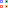
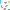

메테오 런
쏟아지는 운석을 피해 최대한 오래 버티는 회피 서바이벌. 별을 먹으면 점수가 오르고, 15초마다 레벨업 — 운석이 더 빨라집니다. 기록으로 친구와 겨뤄보세요.
스네이크
먹이를 먹고 길어지는 고전 게임. 먹을수록 빨라지는 속도 속에서 벽과 내 몸을 피해 최고 기록을 노리세요.
벽돌깨기
패들로 공을 튕겨 벽돌을 모두 깨는 고전 브레이크아웃. 목숨 3개, 레벨이 오를수록 공이 빨라집니다.

2048
같은 숫자 타일을 합쳐 2048을 만드는 슬라이드 퍼즐. 판이 꽉 차기 전에 큰 수를 만드세요.
반응 테스트
초록으로 바뀌는 순간 클릭! 밀리초 단위로 반응속도를 재고 5회 평균으로 겨루는 순발력 게임.

테트리스
이전에 만든 고전 퍼즐 — 쌓고 지우기. 별도 사이트에서 플레이.
🔒
다음 게임
제작 중입니다 — 이 구역에 새 게임이 들어올 예정.